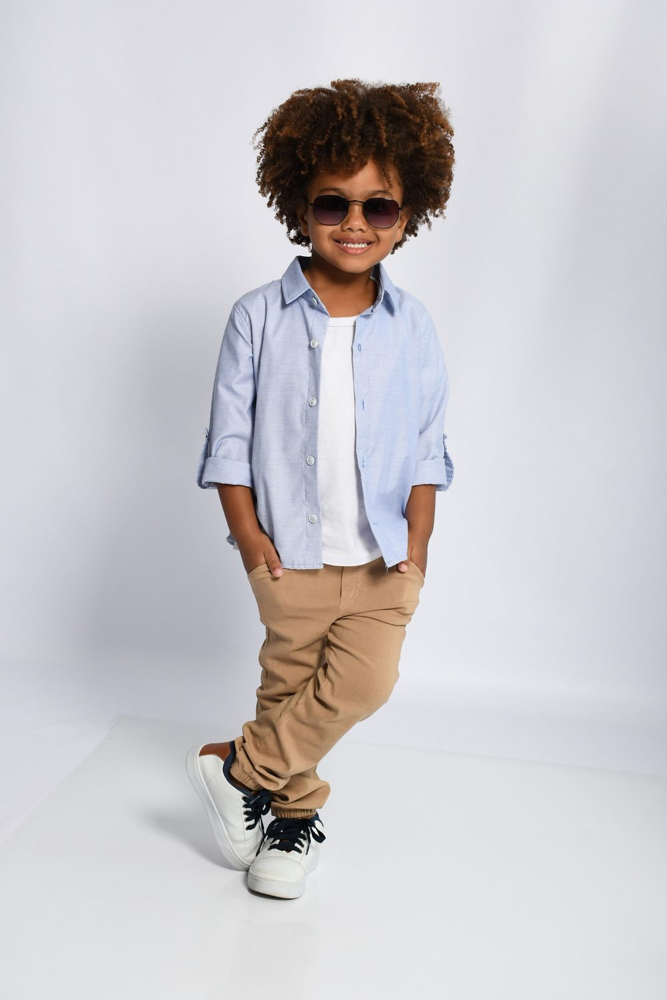
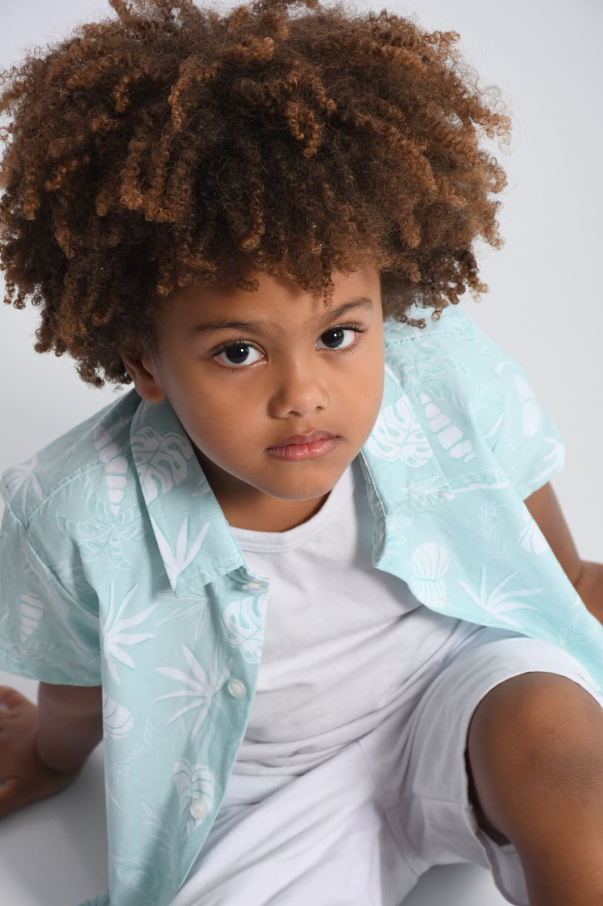
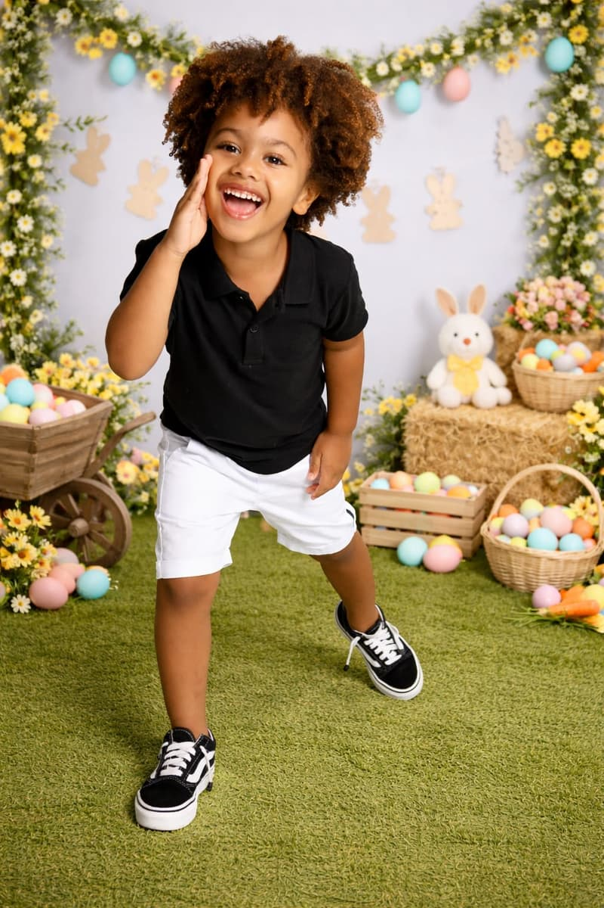
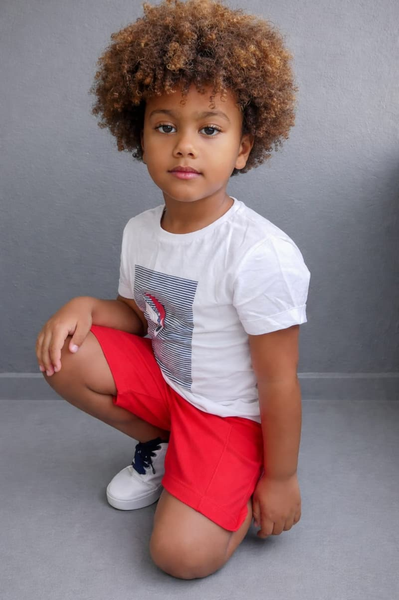
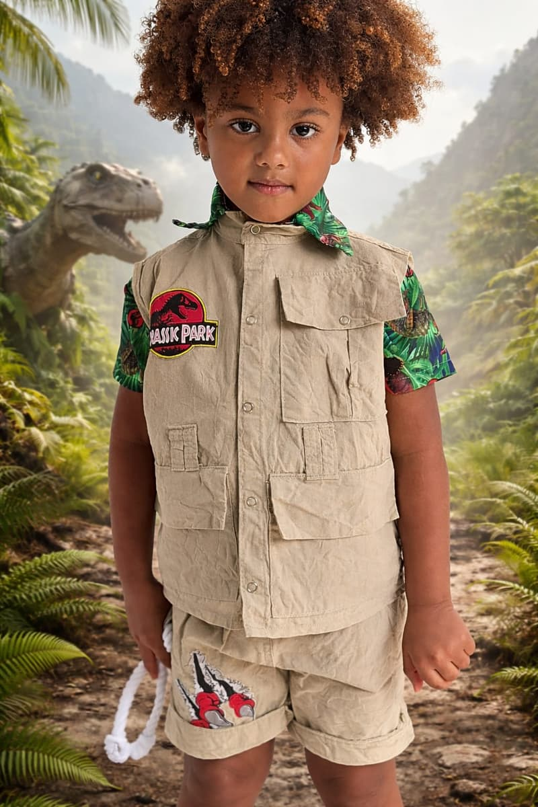
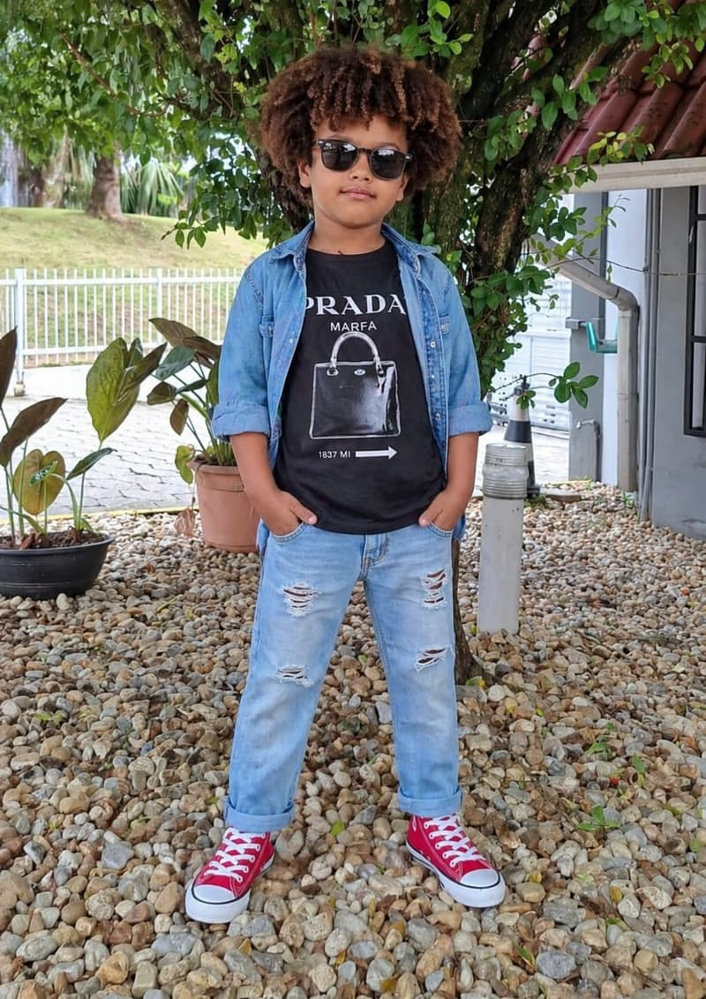
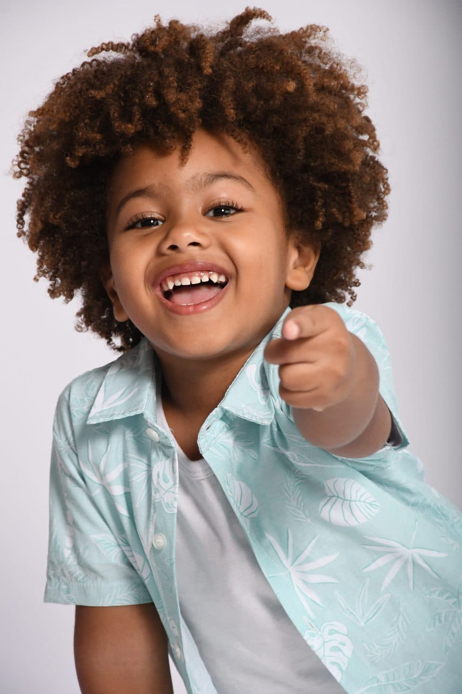
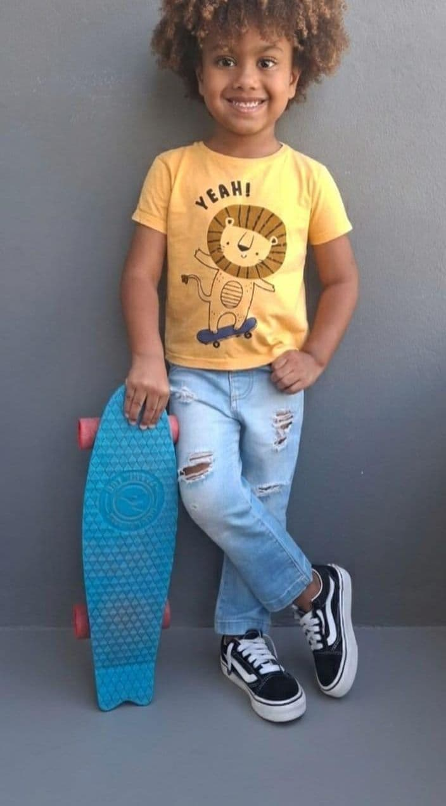

Pequenos passos, grandes sonhos.


Olá! Eu sou o Isaac Roberto e tenho 4 anos. Adoro tirar fotos, brincar e descobrir coisas novas. Sou bem espontâneo, sorridente e gosto muito de participar de ensaios e vídeos, porque sempre me divirto enquanto trabalho.
Gosto de roupas estilosas, cores vivas e de mostrar meu jeitinho em cada foto. Mesmo pequeno, aprendo rápido e sigo direitinho as orientações, sempre com muita energia e alegria.
Fotografar é uma das minhas brincadeiras favoritas — e eu amo quando as pessoas conseguem ver a minha personalidade em cada imagem!






Looks e coleções de moda infantil, sempre com naturalidade.
Conteúdo em movimento, com todo o jeitinho espontâneo dele.
Roupas, calçados e acessórios que ele adora experimentar.
Um público carinhoso, formado principalmente por mães e famílias.
O contato e a agenda do Isaac são cuidados sempre pelo responsável.
Contato via responsável. Toda conversa e agendamento é tratada com o responsável legal do Isaac. Referência: Rio de Janeiro / Blumenau–SC.